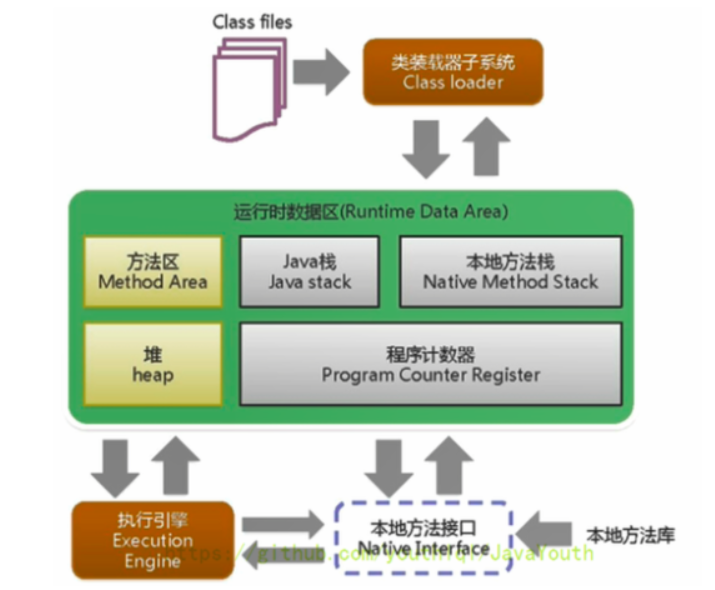
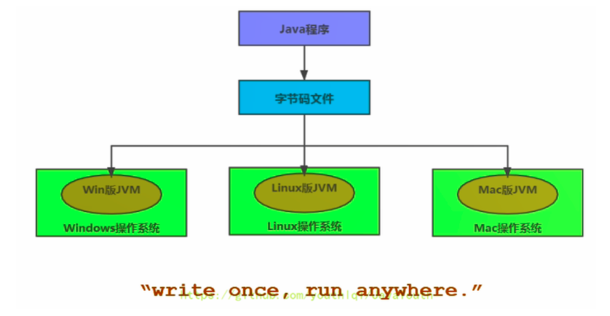

jvm与java体系结构
跨平台的语言

特点
一次编译，到处运行
自动内存管理
自动垃圾回收功能
JVM是运行在操作系统之上的，它与硬件没有直接的交互。
运行时数据区以及线程
线程独有：独立包括程序计数器、栈、本地方法栈
线程间共享：堆、堆外内存（永久代或元空间、代码缓存（方法区））
Runtime类
每个JVM只有一个Runtime实例。即为运行时环境，相当于内存结构的中间的那个框框：运行时环境。
线程：
1，线程是一个程序里的运行单元。JVM允许一个应用有多个线程并行的执行
2，在Hotspot JVM里，每个线程都与操作系统的本地线程直接映射
当一个Java线程准备好执行以后，此时一个操作系统的本地线程也同时创建。Java线程执行终止后，本地线程也会回收
3，操作系统负责将线程安排调度到任何一个可用的CPU上。一旦本地线程初始化成功，它就会调用Java线程中的run()方法
JVM 系统线程
如果你使用jconsole或者是任何一个调试工具（内存监控工具），都能看到在后台有许多线程在运行。这些后台线程不包括调用public static void main(String[])的main线程以及所有这个main线程自己创建的线程。
这些主要的后台系统线程在Hotspot JVM里主要是以下几个：
虚拟机线程：这种线程的操作是需要JVM达到安全点才会出现。这些操作必须在不同的线程中发生的原因是他们都需要JVM达到安全点，这样堆才不会变化。这种线程的执行类型括”stop-the-world”的垃圾收集，线程栈收集，线程挂起以及偏向锁撤销
周期任务线程：这种线程是时间周期事件的体现（比如中断），他们一般用于周期性操作的调度执行
GC线程：这种线程对在JVM里不同种类的垃圾收集行为提供了支持
编译线程：这种线程在运行时会将字节码编译成到本地代码
信号调度线程：这种线程接收信号并发送给JVM，在它内部通过调用适当的方法进行处理